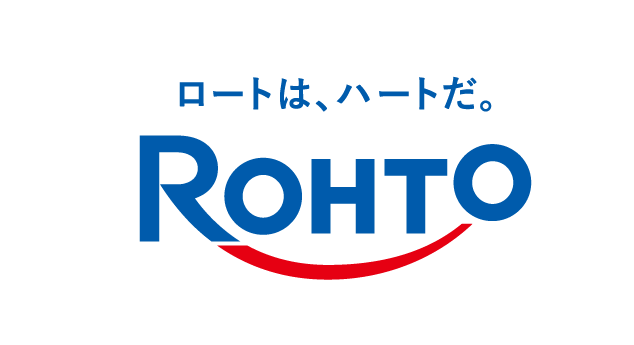
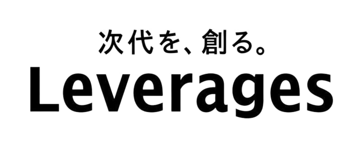
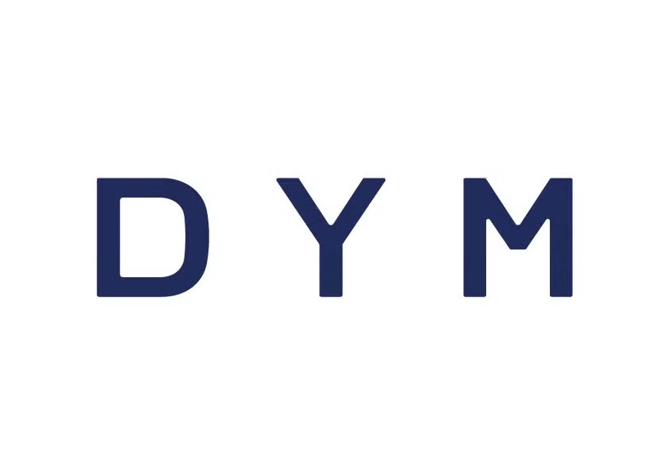
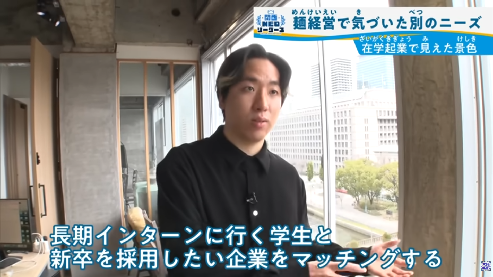
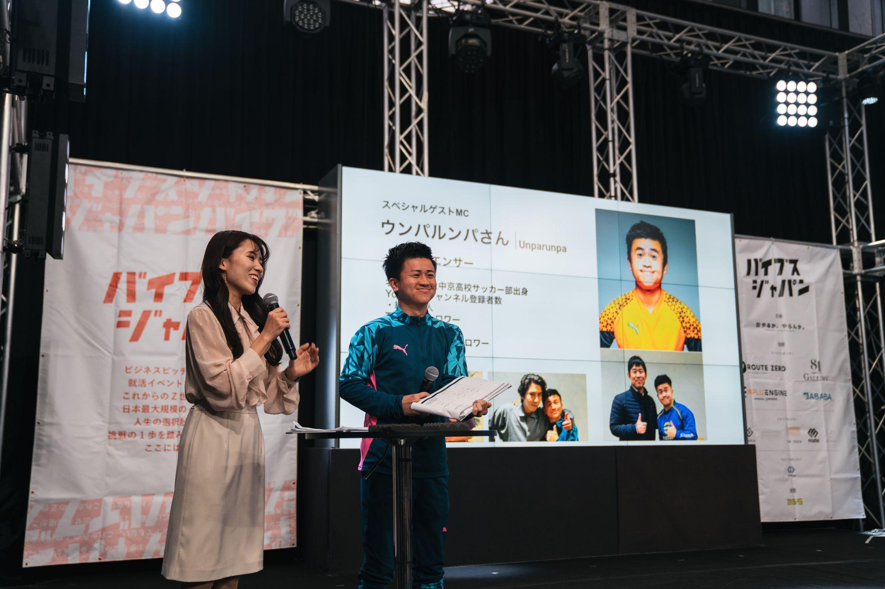
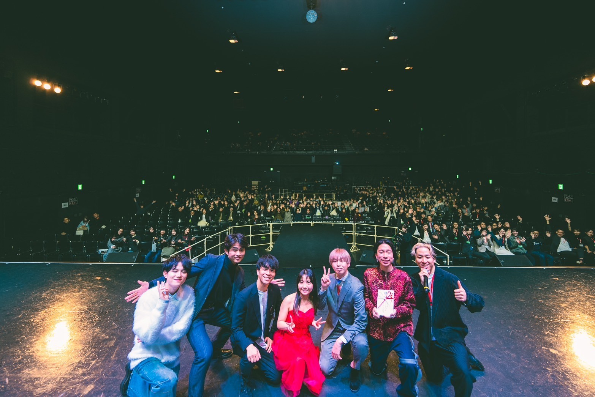
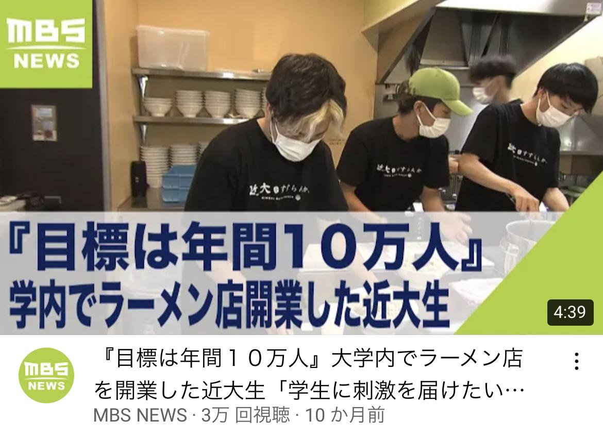
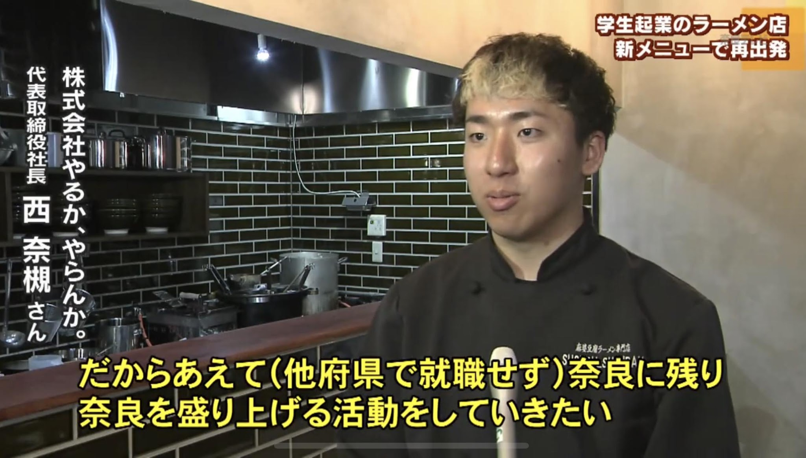
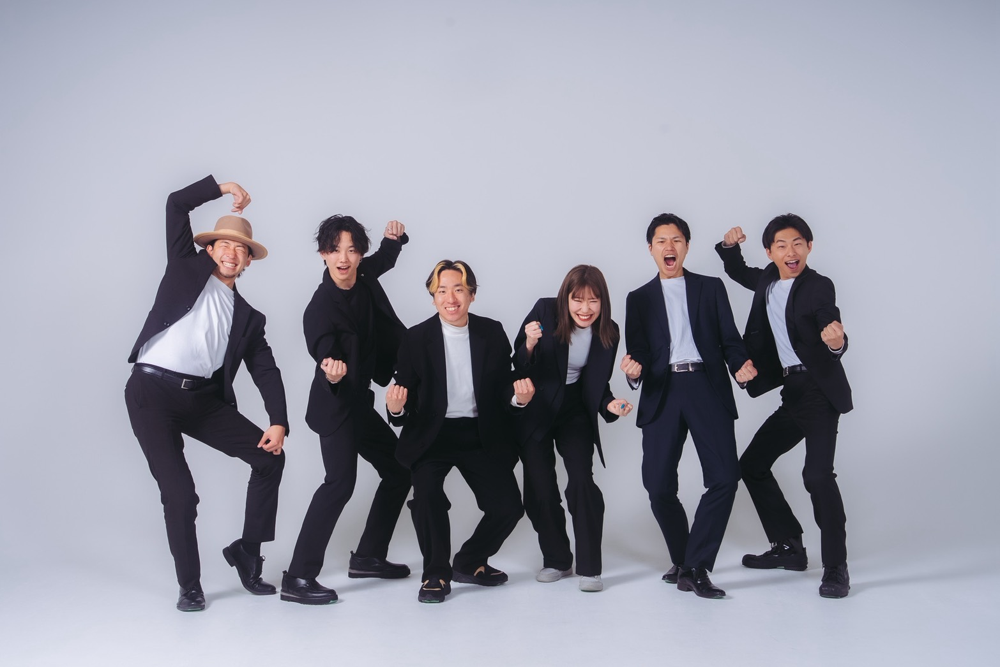

S.Sさん
近畿大学3年
エンジニアインターン
文系から、エンジニア就職へ
BEFORE文系の学部出身だが、エンジニアの就職を叶えたかった。
AFTERITスキルを身につけ、インターン先の会社で内定！エンジニアとして就職できた。
「キャリアに詳しい方のアドバイスとインターンをすることによって、諦めていた道を手繰り寄せることができました！バイブスインターンを使って良かったです。」
大学1〜4年生・大学院生向け｜長期インターン無料紹介
約160社から、あなたに合う1社を無料で。
1年生からOK。
30分で、あなたに合う企業がわかる
オンライン／学生完全無料／話すだけでOK



導入企業 約160社（一部）
01 ─ PROBLEM
就活はもう、大学2年生から始まっている
2人に1人
が、低学年のうちに動き出している
行きたい企業から合格をもらっている学生は、
早くから動いています。
後回しにするほど、選べる選択肢は減っていきます。
出典：マイナビ「2026年卒 大学生インターンシップ・就職活動準備実態調査（4月）」
就活を後回しにした学生の、
よくある末路
こんな未来にならないために、
今、長期インターンを
始めよう。
02 ─ MERIT
3か月以上、社員と同じ現場で働く長期インターン。
学生のうちに、これだけのものが手に入ります。
01
営業・マーケティング・企画・エンジニア。本物の仕事で、社会で通用するスキルが身につく。
02
実際に働くから、得意・苦手・やりたいことが分かる。キャリアの方向性が明確に。
03
企業によっては早期選考や選考優遇につながることも。社会人・経営者と働いた経験が、ガクチカになります。
営業×マーケティング×企画、
複数の実務を経験できるのも長期インターンならでは。
時間を切り売りして稼ぐ
与えられた業務
マニュアル通りの作業が中心
接客・軽作業
スキルとしての積み上げは限定的
同年代中心
学生同士のコミュニティ
自分の価値を高めながら稼ぐ
能動的なプロセス
実務スキル獲得
営業・マーケティング・企画・エンジニア
社会人・経営者と働く
視野が広がり、将来の選択肢が増える
すべて、大学1年生から始められます。
学業との両立もOK！求人や面接で分かるのは表面だけ。
企業
条件・福利厚生など
学生
面接で受かる
ための受け答え
リアルな
職場・文化
本来
知りたい部分
リアルな
性格・能力
中身を知るには、
一緒に働くのが一番早い。
03 ─ GOAL
BEFORE
いまのあなた
AFTER
バイブスインターンを使うと
将来の不安がなくなる30分の面談で、不安をひとつずつ解消していきます
向いている仕事がはっきり分かる実際に働いた経験から“本当の自己分析”ができる
納得できるキャリアを選べる実務経験を武器に、後悔しない新卒就活へ
理想の自分
なりたい姿・達成したい目標
↓ 目標から逆算
↑ 長期インターンで埋める
現在の自分
スキル・経験にギャップ
STEP 01
なりたい自分・仕事選びの軸を一緒に整理。まだ何も決まってなくてOK。
STEP 02
約160社からあなたに合う企業をピックアップ。書類・面接対策もサポート。
STEP 03
キックオフミーティングで目標設定。定期面談で、成長を振り返り、悩みを相談できます。
GOAL 04
実務経験を武器に新卒就活へ。納得できる仕事を選べます。
S.Sさん
近畿大学3年
エンジニアインターン
文系から、エンジニア就職へ
BEFORE文系の学部出身だが、エンジニアの就職を叶えたかった。
AFTERITスキルを身につけ、インターン先の会社で内定！エンジニアとして就職できた。
「キャリアに詳しい方のアドバイスとインターンをすることによって、諦めていた道を手繰り寄せることができました！バイブスインターンを使って良かったです。」
M.Rさん
同志社大学3年
営業インターン
アルバイトの時間を、スキルが身につく時間に
BEFOREアルバイトばかりに明け暮れていました。
AFTERアルバイトの代わりに、給与のある長期インターンを始めました。
「お給料も貰えて、同時にスキルも付き、インターン先で沢山の仲間とも出会うことができました！納得のいく就活ができ、スキルがつく点では絶対にやってて損は無いと思います。」
T.Kさん
関西大学2年
事業開発・企画インターン
大学とサークルの往復から、新規事業のリーダーへ
BEFOREサークルと大学の往復でした。
AFTER新規事業の立ち上げメンバーとして、ベンチャー企業でインターンを始めました。
「なんとなくで生きていた大学生活でしたが、会社を立ち上げるという点にインターン生として参加し、今では他のインターン生を束ねるリーダーをしています！バイブスインターンの面談を気軽に受けた事がきっかけになりました。」
← 横にスワイプ →
04 ─ COMPANIES
主体性のある学生を求める企業だけを紹介しています。
※ 掲載は導入企業の一部です。募集状況は時期により異なります。
営業
提案力・コミュ力が鍛えられる
マーケティング
数字と発信で人を動かす
企画
0から1をつくる
エンジニア
プロダクトを開発する
ほかにも、あなたの目標に合わせた職種を提案します。
人生の1/3は、働く時間。
その時間が「楽しい」になる会社を紹介します。
大手思考の罠
バイブスインターンが紹介する企業
05 ─ REASON
ニュース番組や『相席食堂』などのバラエティ番組に、40回以上出演しています。主催イベントは累計3,000名を動員しています。





よくあるインターン紹介
「どの企業が合う？」「入った後どうすれば？」という不安が残る
バイブスインターン
最初から最後まで伴走するから、途中で止まらない
✕ よくある紹介
人気のない求人を「あなただけ特別に」と勧める／辞退を防ぐために本音を聞かない
◎ バイブスインターン
自己分析をもとに目標に沿った企業だけを厳選。紹介した企業を断ってもOK。納得できるまで一緒に考えます

MESSAGE
「就活の始め方が分からない」「企業の探し方が分からない」。そんな悩みから、仕事選びを妥協してしまう学生がたくさんいます。バイブスインターンは「就活を成功させたい」「変わりたい」そんな学生たちを一人ひとり支援していきます。
株式会社やるかやらんか（有料職業紹介事業許可 29-ユ-300222）
06 ─ FAQ
Aはい。学生の方は面談から企業紹介、インターン中の伴走サポートまですべて無料です。
A大歓迎です。長期インターンは大学1年生から挑戦できます。初回面談では「なりたい自分」を一緒に言葉にするところから始めます。
A導入企業約160社の中から、主体性を評価し、学生にも仕事を任せてくれる企業を紹介します。営業・マーケティング・企画・エンジニアなど、目標に合わせて提案します。
A週2日〜、1日4時間〜など企業によって異なります。授業やサークルに合わせて選べます。
A両立OKです。週の稼働日数や時間、リモート可否など、あなたのスケジュールに合う企業を提案します。
A紹介するのは、基本的に給与のある長期インターンです。給与形態は企業ごとに異なるため、面談時に詳しくお伝えします。
Aもちろんです。納得できるまで一緒に考えます。無理に勧めることはありません。